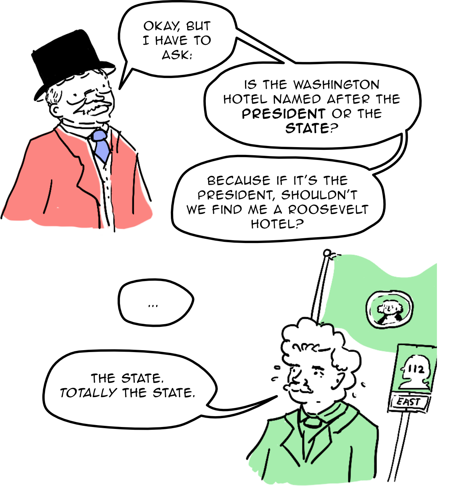
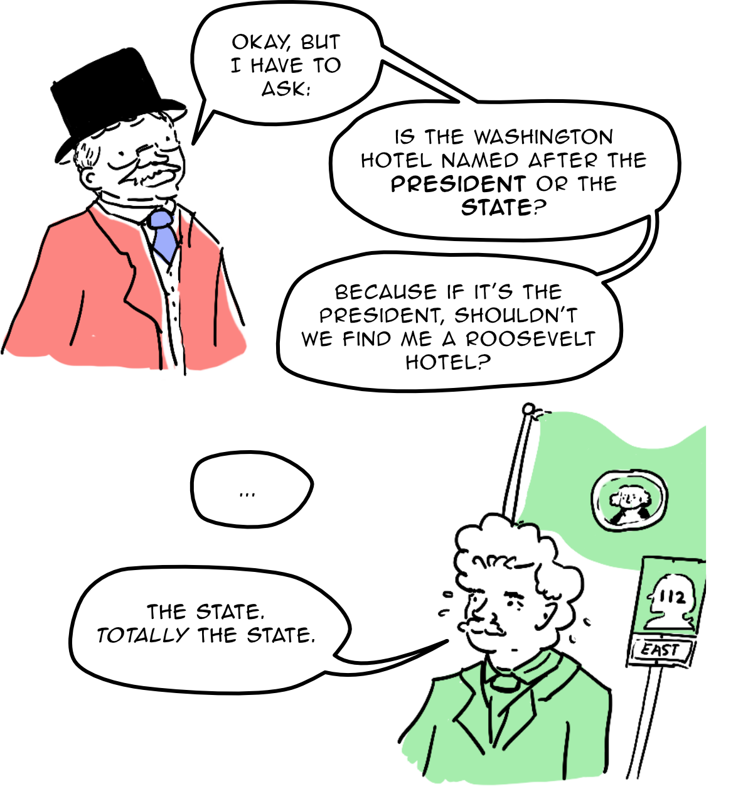
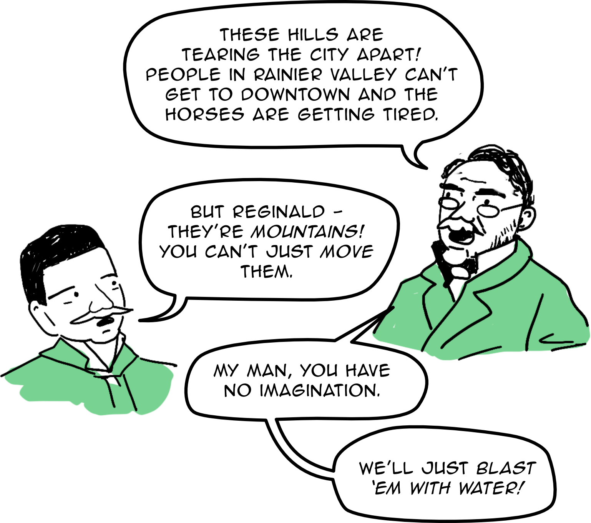

In 1903, President Theodore Roosevelt visited Seattle, and stayed in the
Washington Hotel.
 

The Washington Hotel used to sit on top of Denny Hill and sat where the
Josephium is now. It was destroyed during the big regrading of Seattle, led
by city engineer R.H. Thomson, which flattened Jackson street, lowered Denny
Hill into what is now Belltown, and cut through the Captiol Hill-First
Hill-Beacon Hill ridge.



Photographs of the regrading of Denny Hill
If you look at the Cornelius, you can imagine what Denny Hill used to be:
the top of the building is where the top of the hill used to reach.